プライベート オブジェクト モジュールを、パブリック オブジェクト モジュール内で、 パブリック プロシージャの引数または戻り値、パブリック データ メンバ、 またはパブリックのユーザー定義型のフィールドとして、使用することはできません。という実行時エラーが発生します。）

VBA のクラスモジュールを使ってみた感じた事をまとめてあります。 多分基本的な事しか書いてありません。が、VBA での クラスモジュールの使い方の初歩をまとめてあるサイトを私は知りません。 クラスモジュールって何？オブジェクト指向って何？ってモヤモヤの解消の 一助になる事を目指します。 クラスモジュールの高度な使用例を紹介するサイトではありません。 断りの無い場合を除き Excel VBA を扱っています。
レンジやワークシートは オブジェクト である、という事は 何となく理解できると思います。
多くのカウンター変数を使う必要に迫られる場合があったとします。
Dim i As Long
Dim j As Long
Dim k As Long
Dim l As Long
Dim m As Long
Dim n As Long
……
↑これだと、どの変数が何を表しているのか判らなくなります。 もっと判りやすい名前にしましょう。
Dim WsCnt As Long 'ワークシートの数を管理する
Dim FilesCnt As Long 'ファイルの数を管理する
Dim PersonCnt As Long '職員の数を管理する
Dim CompanyCnt As Long '事業所の数を管理する
Dim RwsCnt As Long '行数
Dim ColumnsCnt As Long '列数
Dim WsCntMax As Long 'ワークシートの最大数
Dim FilesCntMax As Long 'ファイル数の最大数
なんとなくそれっぽい変数名なので、 これなら他の人が見てもわかってくれそうに思います。 コメントも書いてあるし。
でも、この位の数があるとしんどく感じます。変数を沢山宣言すると、 宣言したまま、結局使わないままに放置し、使っていない事に気づきもしないなんて よくある事です。
カウンター変数 WsCnt はワークシートの数で、WsCntMax は最大数です。 処理する対象の数が不定の場合、終了するまでの目安をユーザーに 伝える為、進捗状態を表示させる事もあります。変数によっては 最大数も押さえておく必要があるのです。
カウンター変数を管理する Cls_Counter を作ってみます。
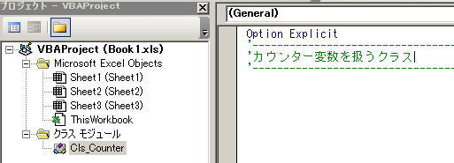
カウンター変数を扱うオブジェクトを作って変数の管理をさせるのです。 クラスモジュールの名前は Cls_Counter にしてみました。
Option Explicit
'----------------------------------------------------------------
'カウンター変数を扱うクラス - Cls_Counter -
'----------------------------------------------------------------
Private m_Cnt As Long
Private m_Max As Long
Private Sub Class_Initialize()
'カウンターの初期化
m_Cnt = 0
End Sub
'カウンターの増加
Public Sub CountUp()
m_Cnt = m_Cnt + 1
End Sub
'現在のカウンター値を返す
Public Property Get CurrentNumber()
CurrentNumber = m_Cnt
End Property
'カウンター最大値の登録
Public Property Let MaxSize(ByVal n As Long)
m_Max = n
End Property
'カウンター最大値の呼び出し
Public Property Get MaxSize() As Long
MaxSize = m_Max
End Property
クラスモジュールは Initialize イベントを持ちます。 オブジェクトが作成された時、最初に実行されるコードが Initialize です。 Initialize イベントはフォームモジュールでお馴染みです。フォームモジュールも シートモジュールも、ThisWorkbook モジュールもクラスモジュールです。
オブジェクト指向言語では、この Initialize の役割をするプロシージャを コンストラクタと呼びます。 ここで、m_Cnt 変数を 0 で初期化していますが、VBA では数値型の変数の初期値は 必ず 0 なのでここの処理は無くても結果に影響ありません。 ここで 0 に初期化するコードをわざわざ書いたのは、気分の問題です。
Excel VBA の コンストラクタ についてもう少し説明しておきます。
クラスモジュールには コンストラクタ があるものなのですが、 シートモジュールとThisWorkbook モジュール には、 少なくともユーザーの眼に触れる場所には Initialize がありません。 コンストラクタあるとすれば、WorkSheets.Add される時、また、Workbooks.Add される 時に（つまり、シートオブジェクトやブックオブジェクトがメモリにロードされる時に）必ず最初に 実行されるのが コンストラクタ ですから、敢えて言えば ThisWorkbook オブジェクトの Open イベントがシートオブジェクトとブックオブジェクト共通の コンストラクタ と言えるのかもしれません。
Excel VBA でのオブジェクト指向には、特殊だったり不十分だったりする面が あるようです。「あるようです」とは、私自信が他に比較できる程習得しているオブジェクト指向言語 がありませんので、推測で語るしかないわけです。
Excel VBA で オブジェクト指向 を語る解説書やサイトが稀有なのは、 こういった事情によるものなのでしょう。 「VBA しか知らない人間はクラスモジュールに書かれた コードに出会ってしまった時どうすればいいのだ。／(＾o＾)＼」
コードの説明に戻ります。
変数の頭に m_ と付けているのは、モジュールレベルである事を表す、よく見かける書き方です。 m_ を付けない人もよく見かけます。
クラスモジュールには Sub プロシージャも Function プロシージャも記述できます。 クラスモジュールに書かれた Sub プロシージャはそのクラスのメソッドとして振舞います。 Function プロシージャはそのクラスの関数として振舞います。そして、Property プロシージャは そのクラスのプロパティとして振舞う事になります。
入門書で最初に紹介されるクラスはだいたいこんなもんです。 Cls_Counter モジュールの構成を見ていきましょう。ひとつひとつのプロシージャは 、モジュールレベルの変数に値を代入するか、値を取り出すか 少しばかりの演算をしているだけです。
Private m_Cnt As Long
Private m_Max As Long
↑モジュールレベルの変数は Private で宣言します。 Private で宣言しているので、直接他のモジュールから操作される事はありません。 この部分をオブジェクトの値とか、クラスのフィールドなどと言います。
'カウンターの増加
Public Sub CountUp()
m_Cnt = m_Cnt + 1
End Sub
この記述で CountUp メソッドを自作した事になります。 モジュールレベル変数 m_Cnt を 1 ずつ増加させているだけです。 この部分より下のプロシージャは全て Public で宣言しています。 他のモジュールからでもアクセスできるのでこれら Public で宣言されているメソッドや プロパティの事をクラスのインターフェイスという言い方をします。 他のモジュールに対し公開されている インターフェイスを通しのみフィールドへの操作を出来るように設計します。 フィールドを Public で宣言してしまうと、 フィールドの値を操作する手段を複数用意してしまう事になり、 ややこしくなるのでダメですし、インターフェイスを通せばプログラマーが設計した通りの 処理だけ実行される事が保証されていますが、（ここでは 1 を加算した値を m_Cnt に代入している） Public で宣言してしまったら、どんな値も無規則に代入できてしまいます。 フィールドの値は Private で隠蔽して、決まった手順以外の接触から保護してやらねばなりません。
'------------------------------------------------------------
'クラスフィールドをパブリックで宣言してしまった場合
'の値を書き換えてられてしまう悪い例
'------------------------------------------------------------
'<標準モジュール>
Dim objCounter As cls_Counter
Dim i As Integer
Set objCounter = New cls_Counter
For i = 1 To 10
'▼ CountUp メソッドとして公開されているインターフェイスを操作する。
objCounter.CountUp
Next
'▼ CountUp メソッドを通さずにフィールドの値を変更。
m_Cnt = 10
'▼ 10回しか CountUp していないのに CurrentNumberプロパティ は 20 を返す
Debug.Pring objCounter.CurrentNumber
'20
カプセル化とか隠蔽という言葉は、 この外部に公開する部分と非公開の部分を分けて作る様子を表す用語です。
「フィールドの値は Private で隠蔽して、決まった手順以外の接触から保護してやらねばなりません。」 と書きましたが、では以下のようなクラスがあった場合はどうでしょうか？
'------------------------------------------------------------
'渡した値を記憶しておくだけのクラス - Cls_ValueKeeper -
'このクラスはカプセル化されていると言うのだろうか？
'------------------------------------------------------------
Private m_Value As Long
Public Property Let Value(ByVal n As Long)
m_Value = n
End Property
Public Property Get Value() As Long
Value = m_Value
End Property
Property プロシージャは後の説明となりますが、 こんなクラスを設計するぐらいなら Public でフィールドの値を 一つ用意する方がマシだと思います。
'------------------------------------------------------------
'渡した値を記憶しておくだけのクラス - Cls_ValueKeeper -
'このクラスはカプセル化されていると言うのだろうか？
'------------------------------------------------------------
Public Value As Long
この状態を カプセル化 と呼ぶかどうか… … 「呼ぶ」というのが正解である筈と思いつつ、もし情報処理試験での 設問であれば、「カプセル化ではない」と解答しておきます。 この用語の定義はよーわかりません。
因みに隠蔽という言葉はオブジェクト指向以外でも使われる用語です。 隠蔽とは Private で宣言された変数が外部から参照できなくなるという スコープの状態を指す言葉です。
カプセル化 って言葉もそうなのですが、オブジェクト指向 で使われる用語というのは、 妙に謎めいています。用語の謎めき具合に対して、 解説を読んでしまうと「へ？」っと思うような当たり前の事ばかり言っている、という印象を受けます。
Property プロシージャを説明しておきます。 プロパティ（属性）というのは、フォームの Caption プロパティとか Range の Text プロパティとかのあのプロパティです。
構文知らないとか忘れたとかの場合は、メニューバーにコードの 自動生成機能がありますので利用しましょう。
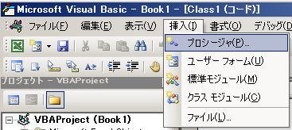
挿入(I) ⇒ プロシージャ(P) で [プロシージャの追加] というフォームが表示されます。
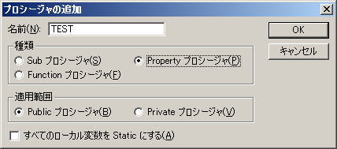
次の中身の無い構文が自動生成されます。
Public Property Get TEST() As Variant
End Property
Public Property Let TEST(ByVal vNewValue As Variant)
End Property
Get の方にオブジェクトの値を取得させる中身を記述し、 Let の方にオブジェクトの値を設定する中身を記述します。 自動生成なので、値の型がなんでも済むように Variant になっていますので、 ここは当然相応の型に書き換えて使用します。 String 型のプロパティ m_Text を用意して使ってみます。
Option Explicit
'------------------------
'Class1
'------------------------
Private m_Text As String
Public Property Get Text() As String
Text = m_Text
End Property
Public Property Let Text(ByVal strValue As String)
m_Text = strValue
End Property
ちゃんと動くかどうか確認してみます。
Option Explicit
'------------------------
'Module1
'------------------------
Sub プロパティのテスト()
Dim Obj1 As New Class1
Obj1.Text = "AAAA"
Debug.Print Obj1.Text
'AAAA
End Sub
Get 、Let の他に、Set という書き方も用意されています。
Option Explicit
'------------------------
'Class2
'------------------------
Private m_Range As Range
Public Property Get Range() As Range
Set Range = m_Range
End Property
Public Property Set Range(ByVal newRng As Range)
Set m_Range = newRng
End Property
これも、ちゃんと動くかどうか確認してみます。
Option Explicit
'------------------------
'Module2
'------------------------
Sub プロパティGETのテスト()
Dim instRng As New Class2
Set instRng.Range = Sheet1.Range("a1")
Debug.Print instRng.Range.Address
'$A$1
End Sub
VBA でのオブジェクトの代入式には Set ステートメントを使いますから、 ご推察の通り、プロパティSetはオブジェクトをデータ型とするプロパティを用意する時に使います。
VBA でのオブジェクトの代入式に Set ステートメントを使う事は、 慣れ親しんだ文法なので違和感があると思いますが、実はわざわざ Set でプロパティを 用意しなくても、Let のままオブジェクトのプロパティを記述出来ます。
Option Explicit
'------------------------
'Class3
'------------------------
Private m_Range As Range
Public Property Get Range() As Range
Set Range = m_Range
End Property
Public Property Let Range(ByVal newRng As Range)
Set m_Range = newRng
End Property
このようにすると、インスタンスを利用する場合に Set を使わずに オブジェクトの代入式を記述できます（しなければなりません）。
Option Explicit
'------------------------
'Module3
'------------------------
Sub プロパティLETでも動作するテスト()
Dim instRng As New Class2
instRng.Range = Sheet1.Range("a1")
Debug.Print instRng.Range.Address
'$A$1
End Sub
クラス は オブジェクト の型 なので New キーワードで インスタンスを生成してやらないと使えません。 Class1型のオブジェクトを New キーワードでインスタンスを生成しています。 インスタンスを生成とは、オブジェクトのフィールドのメモリ領域を確保するという事です。 動的メモリ確保というのは時間がかかる作業です。 クラスが抱えている変数のサイズが大きい程時間がかかります。 また、それ以上にインスタンスに使用されていたリソースが解放される時に時間がかかります。 なので、インスタンスの生成と解放をループの内側に配置して何万回も廻わすような事をしてしまうと、 時に使用に耐えない程実行速度は劣化します。
クラスを使う事で実行速度の向上を期待するのは正しくありません。 どちらかと言えば遅くなる理由の方が見つけやすいです。 それでもクラスを使うのは、コードがこんがらがりにくく、仕様に変更が入った場合、 修正が局所的な書き換えで済む為品質の向上が期待できる、というメリットを期待できるからです。 （少なくともコーディングした本人は、よりスッキリした書き上げたコードを把握しやすくなるでしょうから、 書かなくてよい冗長な処理を排除でき、結果実行速度がアップ、という事なれば理想的なんだと思います。）
オブジェクト指向の手法を使うと安全なコーディングが出来る事は確かです。 それはフィールドの値を「隠蔽」しているから安全なのではなく、 生成したインスタンス（つまりオブジェクト）自体のスコープをプログラマーが コントロールできるから安全なのです。Public で生成してしまった インスタンスは、どこからでも値を変更出来てしまうので、安全でもなんでもありません。
コードの説明にもどります。
Dim Obj1 As New Class1
という書き方は、
Dim Obj1 As Class1
Set Obj1 = New Class1
という書き方のバリエーションですが、メモリ領域確保の時間を計測してみると 、New で宣言した部分では Obj1 を配列で２０万個宣言してみても 殆ど時間がかりません。実際にメモリが確保されるのは、インスタンスが 最初に使用されるタイミングであるように見えます。また、 Set と対に使用された 場合は、その時点でメモリが確保されているように見えます。
クラス は オブジェクト の型 と書きましたが、ここでは Class1型で オブジェクトを As で宣言しています。Class1 のフィールドは String 型ですが 型のネスト が行われている為に、「実際のデータ型が隠蔽されている」 等と表現されます。そして、Class1型では訳が判りませんのでもっとピンとくる名前をつけるべきです。 このクラスはテキストを記憶しておくだけの何の役にも
通常ワークシートのイベントを発生させるには、 ワークシートのモジュール内に、コードを記述する事になります。
クラスモジュールを使うと、何もコードを書いていないワークシートの イベントも捕まえる事ができます。 イベントを発生させたいワークシートをコードで汚す（？）事がないどころか、 目的のワークシートを含むエクセルブックに一切コードを書かなくてもイベントを 利用する事ができるようになります。
このワークシートでイベントを利用して業務に役立つコードを走らせたい。しかし 対象のエクセルブックが無数にあり、全てのエクセルブックにコーディングするわけにはいかない、とか、 お得意様の作成した作成したワークシートで、 勝手にコードを仕込んだりすると何言われるか判らないから弄れない、なんて時に この手法は使えます。
Option Explicit
'Cls_EventCatcher-----------------------------------
'ワークシートのイベントを捕まえるクラス
'------------------------------------------------
Private WithEvents m_WS As Worksheet
クラスモジュール Cls_EventCatcher を作成し、 先ず Worksheet 型のモジュールレベル変数 m_WS を一つ宣言します。 宣言する際に WithEvents キーワードを付けて宣言します。 このキーワードを付けるとオブジェクト（この場合はワークシート）のイベントを 発生させる事が出来るようになります。WithEvents キーワードを使う事が出来るのは、 クラスモジュール(シートモジュール、ThisWorkbook モジュールを含む)だけです。 ここまで書くと、オブジェクトボックスに m_WS が表示されるようになります。
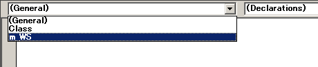
ワークシートに配置したテキストボックスを１０個配置する事を考えてみます。 このテキストボックスの規定の背景色は薄い緑色で、１０００以下の整数しか入れられ無いという条件があったとします。 １０００を超えた数字や、数字でない値が入力された場合は、テキストボックスの色が警告色になり、 メッセージボックスを表示するようにします。１０個のテキストボックスのイベントプロシージャを コーディングするしたり背景色をそれぞれ設定するような冗長な事はできればやりたくありません。 これが１００個のテキストボックスであれば尚の事です。
特定のスタイルとイベントを持つテキストボックスのクラスを作成してみましょう。この作業は どことなく、html の CSS（スタイルシート） の Class の設計に似ています。
クラスのプロパティに Instancing というのがあります。
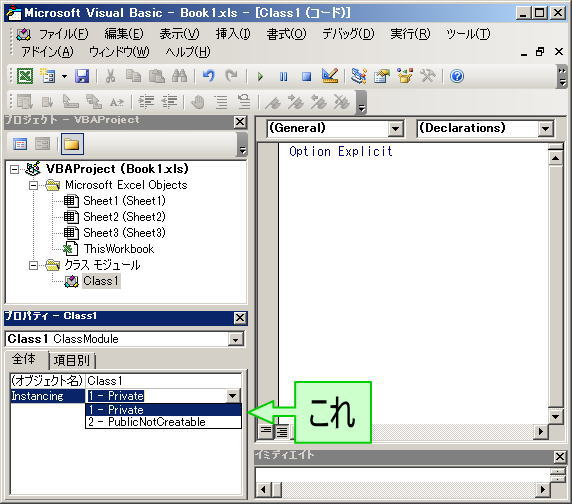
F1キーでヘルプを読もうと思いましたが何も表示されません。(*｀ﾛ´ﾉ)ﾉ。
このプロパティは以下のように使えるようです。
プライベート オブジェクト モジュールを、パブリック オブジェクト モジュール内で、 パブリック プロシージャの引数または戻り値、パブリック データ メンバ、 またはパブリックのユーザー定義型のフィールドとして、使用することはできません。という実行時エラーが発生します。）
文章にすると難解そうですが、実際にやってみれば判ります。 複数のクラスを一まとめにする方法は こちらのサイトの受け売りです。ある程度クラスモジュールの数が多くなってきて、 複数のクラスをグループ毎にまとめて管理したい場合に使える方法かも知れません。
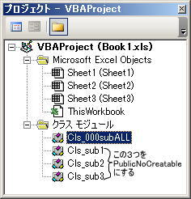
Cls_000subALL のインスタンスを作れば、Cls_sub1〜Cls_sub3 をまとめて使用できるようにしてましょう。 プロジェクトウィンドウ内のモジュールは名前順に並ぶものの、ツリービューのようには表示出来ません。クラスモジュールの 名前は、機能をまとめたクラスが上下に並んで表示されるように一工夫して付けた方が良いです。
Option Explicit
'Cls_000_FncALL-----------------------------------
'Cls_001_Fnc1, Cls_001_Fnc2, Cls_001_Fnc3 を
'まとめてインスタンスにするクラス
'------------------------------------------------
Public fnc1 As New Cls_001_Fnc1
Public fnc2 As New Cls_001_Fnc2
Public fnc3 As New Cls_001_Fnc3
Cls_001_Fnc1, Cls_001_Fnc2, Cls_001_Fnc3 には、それぞれ自分のクラス名を返す関数をそれぞれ作っておきます。 この３つのクラスの Instancing プロパティは PublicNotCreatable に設定します。
'Cls_001_Fnc1----------------------------------------
'クラス名を返すクラス１
'------------------------------------------------
Public Function ClsName() As String
ClsName = "Cls_001_Fnc1"
End Function
'Cls_001_Fnc2----------------------------------------
'クラス名を返すクラス２
'------------------------------------------------
Public Function ClsName() As String
ClsName = "Cls_001_Fnc2"
End Function
'Cls_001_Fnc3----------------------------------------
'クラス名を返すクラス３
'------------------------------------------------
Public Function ClsName() As String
ClsName = "Cls_001_Fnc3"
End Function
ここまで出来たら、標準モジュールで Cls_000_FncALL のインスタンスを作成して３つのクラスの関数を呼び出せる事を確認できます。
myFnc という変数名でインスタンスを作成し、myFnc.（ドット）と入力すれば、ネストしたクラスのインスタンスの一覧が表示されます。

fnc1 を選択し、.（ドット）を入力すると、fnc1 オブジェクトの ClsName 関数が入力候補に表示されます。

test() を実行すると、ちゃんと関数の結果が返っている事を確認できました。

Implements は「実装する」という意味のステートメントです。 実装 とは実際に動作するだけのコーディングをする事です。 という事は、実装 されていない 何か がプロシージャが何処かにあって、 それに実際に動作するコード部分を 実装 するという事になります。
何か とは、 インターフェイス と呼ばれるクラスです。インターフェイス はクラスモジュールにプロシージャや変数の プロトタイプ（量産前の仮設計）だけを記述します。 通常のクラスモジュールと同じようにモジュールの名前を付けてしまうと、区別がつかなくなるので、 VB.net では、I を頭につける事が慣習となっています（Class1 ではなく、IClass1 みたいな）。VBA でも このやり方に習って名前を付けておくと判りやすいと思います。
この仕組みを使うと何がいいのか？。以下サンプルをあげていきます。
このサンプルは「VB6プログラマーのための入門Visual Basic.NET独習講座（技術評論社）」 で、VB.net のオブジェクト指向の説明として挙げられているものを下敷きにしています。 VBA でも同様の事ができます。
次のようなフォームを想定します。
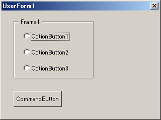
このフォームは、どのオプションボタンが選択されているかによって ボタンがクリックされた時の処理を切り分けます。
クラスモジュールを使わずにわけなくコーディングできますょ、こんなもの、えぇ。 でも、ここで仕様変更があり、オプションボタンの選択肢が３つから６つに増えたと したらどうでしょう( ﾟ∀ﾟ )ｶｯ？。ボタンで実行されるプロシージャでは If 文か、Select Case 文で処理を切り分けていますから、この場合ボタンのイベントプロシージャに 変更を加えなくてはなりません。しかし、オブジェクト指向のコーディングでは、 既にデバッグの済んでいる既存のコードに一切手を入れる事なく、ボタンのイベントプロシージャの 機能を３つから６つに追加する事ができます。既存のコードに手を入れずに済むのですから、 バグを作りこむリスクを最小に抑える事が出来ます。これは素晴らしい事です。
ボタンのイベントプロシージャが、幾つもの役割を持ち得る様子は、オブジェクト指向の 多能性（ポリモーフィズム） と呼ばれるものの側面の一つです。
'------------------------------------
'IBase
'------------------------------------
Public Sub SomethingMethod()
End Sub
インターフェイス IBase を上のように定義します。プロシージャの中身は空のままで何も記述しません。
次に、この IBase インターフェイスを Implements（実装） するクラスを３つ作成します。
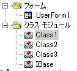
クラスモジュールに Implements とタイプすると、入力候補の中から IBase を選択できます。
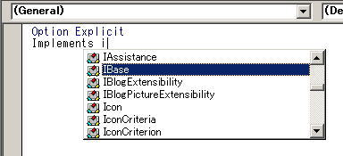
IBase を Implements したモジュールのオブジェクトボックスから IBase を 選択すると、インターフェイスで作成したプロトタイプ SomethingMethod を作成する事ができます。 自動生成されるプロシージャが Private で作成されるところにも注目です。
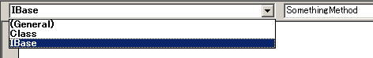
Option Explicit
Implements IBase
'----------------------------------
'Class1 何かの処理
'----------------------------------
Private Sub IBase_SomethingMethod()
'何かの処理
MsgBox "Class1の処理を実行しました"
End Sub
Option Explicit
Implements IBase
'----------------------------------
'Class2 何かの処理
'----------------------------------
Private Sub IBase_SomethingMethod()
'何かの処理
MsgBox "Class2の処理を実行しました"
End Sub
Option Explicit
Implements IBase
'----------------------------------
'Class3 何かの処理
'----------------------------------
Private Sub IBase_SomethingMethod()
'何かの処理
MsgBox "Class3の処理を実行しました"
End Sub
フォームモジュールのコードは以下のようになります。
'-------------------------------------- 'UserForm1モジュール '-------------------------------------- Option Explicit Private inst As IBase Private Sub OptionButton1_Click() Set inst = New Class1 End Sub Private Sub OptionButton2_Click() Set inst = New Class2 End Sub Private Sub OptionButton3_Click() Set inst = New Class3 End Sub Private Sub CommandButton1_Click() If inst Is Nothing Then MsgBox "オプションボタンを選択して下さい" Else inst.SomethingMethod End If End Sub
モジュールレベル変数 inst を IBase 型で宣言しています。 この IBase 型の inst に各クリックイベントのプロシージャ内で Class1〜3 型を代入してもエラーになりません。IBase と IBase を Implements した各クラスは親子関係にあります。IBase を スーパークラス とか 基底クラス 、子クラス側は サブクラス と呼ばれるものに相当します。 親クラス型で宣言した変数には子クラス型のオブジェクトを代入する事が出来ます。
どれだけオプションボタンが増えても、CommandButton1_Click の内容に 一切変更を加える必要が無い事が、この手法の素晴らしいところです。 他のクリックイベントのコードにも一切影響がありません。 SomethingMethod メソッドは如何様の処理もこなす 多能性（ポリモフィズム）を発揮します。
サブクラスのインスタンスは、スーパークラスで宣言した変数に代入してもエラーにならない、 のですが、実のところ、エラーにならないどころではなく、VBA ではこの手続きは必須です。 こう書かないと動作しません。２回型宣言するのがちょっと面倒です。 必ずしも代入が必須という事ではなく、親子両方のクラスのオブジェクト型なのだ、と いう事が宣言できれば良いようで、例えば下のような書き方でも動作します。
Option Explicit
Sub Test()
Dim inst As New Class1
'ここで inst. とタイプしても
'入力候補は表示されない
RunSomething inst
End Sub
Sub RunSomething(ByRef obj As IBase)
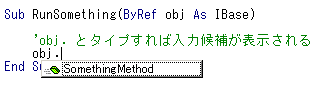
obj.SomethingMethod
End Sub
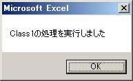
インターフェイス を実装したクラスは、インターフェイス に 定義されているプロトタイプが全て実装されていないと、エラーになって動作しません。 言い方を変えると、インターフェイス を実装したクラスには、インターフェイス に 定義されているメンバが全て実装されている事が保証されている事になります。 そして、インターフェイス に定義さていないメンバを サブクラス にだけ 実装してもメンバとして認識されません。 さらに言い方を変えると、インターフェイス に変更を入れる事態が発生した場合、 対応する サブクラス の全てが影響を受ける事になります。これは恐ろしい事です。
「オブジェクト指向はプログラムの変更が局所的で済むから良い」とは真逆の事が起きてしまいます。 インターフェイス は、慎重に設計する必要があります。